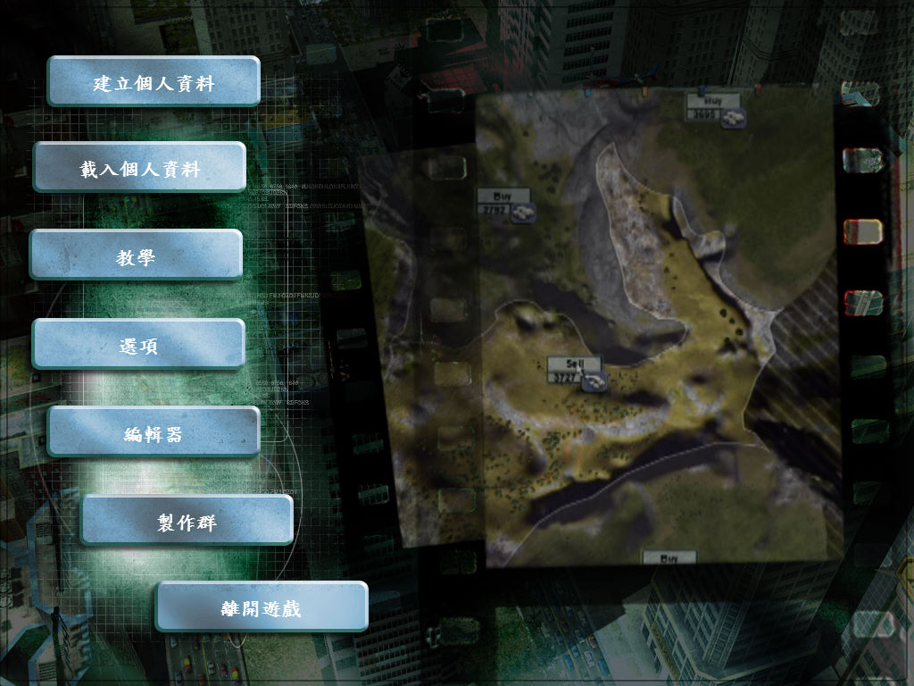
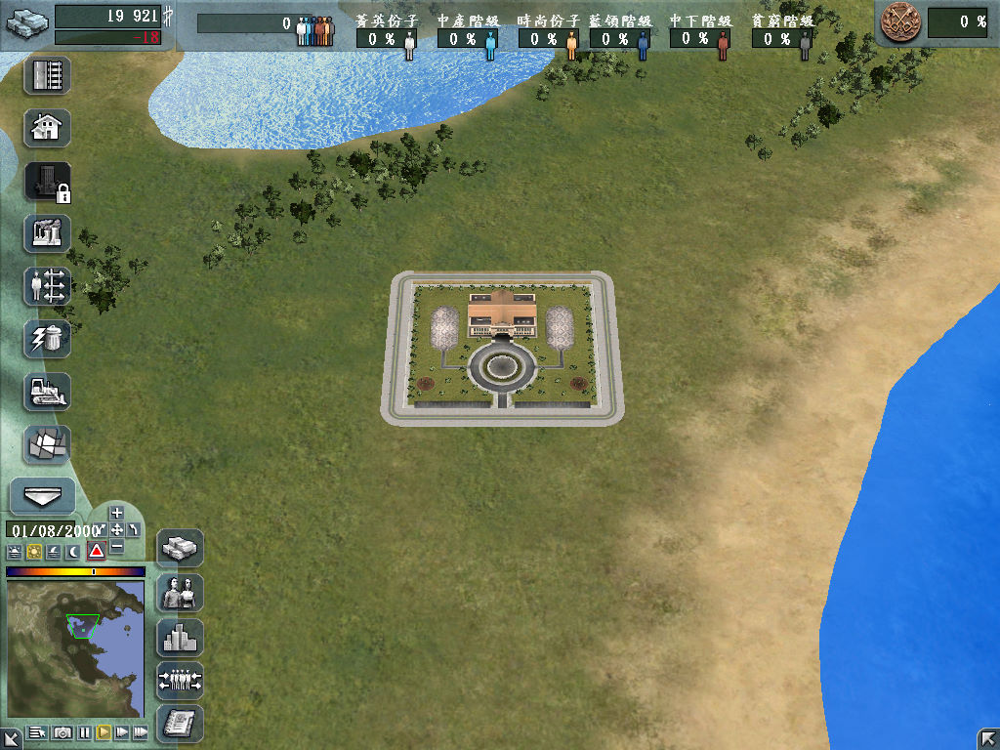

名稱：夢想大都會／都市生活 (City Life，中文／英文版)
簡介：Monte Cristo 2006年出品的城鎮建造模擬遊戲，由CDV代理發行，台灣由英寶格中文
化並代理發行。同年推出增加內容的「世界版（World Edition）」，2007年再更名為
「豪華版（Deluxe）」，2007年又推出增加內容的「2008版（2008 Edition）」 [待補]。


備註：本版為繁中版（已破解），缺繁中版光碟
保護：繁中版主程式為光碟StarForce 3.07
英文豪華版為光碟Tages 5.5.2
英文2008版為光碟SecuROM 7.36，可使用SRLoader啟動
檔案：nocd_deluxe.rar = 英文豪華版免光碟檔
nocd_2008.rar = 英文2008版免光碟檔